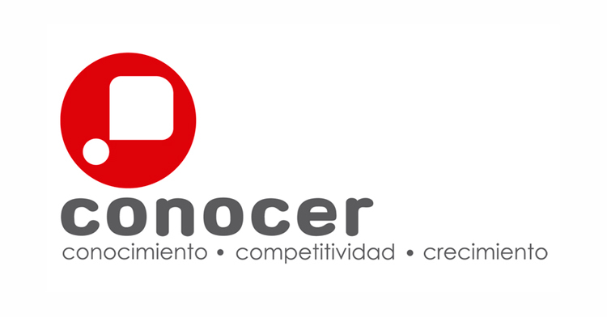

I'm a biotechnologist
Gabriela Salazar
Soy una biotecnóloga trabajadora y motivada que ha adquirido una amplia experiencia en el desarrollo de software.


Acerca de mí
Soy un biotecnóloga trabajadora y motivada que ha adquirido una amplia experiencia en el desarrollo de software.
A lo largo de mi carrare, participé en investigaciones biológicas en las que he podido aplicar técnicas bioinformáticas como: el desarrollo de un software tipo CASA para determinar la motilidad de espermatozides con el fin de aplicarlo en la selección de células para la inseminación in vitro.
Adicionalmente, comencé trabajando como creadora de página web con CMS en una empresa local, para posteriomente adquirir experiencia en el campo y comenzar a aplicar los conocimientos en otras área del ciclo de vida de sofware, por ejemplo, aseguramiento de calidad y pruebas de usuario. A lo largo de los años, he fortalecido mis habilidades de trabajo en equipo y resiliencia.
Además, he contribuido de manera inmediata a mejorar los procesos mediante la gestión exitosa de proyectos que resultaron en un mejor desempeño y prácticas.
Experiencia
Project Manager
Part time
12/2017 - 11/2018
Lideré un equipo de 11 Ingenieros de Software que desarrollaron cinco proyectos para empresas de terceros. Planifiqué, organicé y supervisé enfoques nuevos y existentes para cumplir con los plazos establecidos en proyectos con Azure DevOs Platform. Supervisión del Departamento de Garantía de Calidad y documentación elaborada.
Inter CEO
Full time
11/2018 - 01/2019
Coordiné un equipo de integrantes en las áreas de Administración Contabilidad, Desarrollo Web, Android e iOS y Aseguramiento de la Calidad. Establecí comunicación con clientes y participé en reuniones para analizar los riesgos y requerimientos de dos nuevos proyectos. Elaboré informes de proyectos propuestos para conocer la situación de la empresa.
CMS Team Lead
Full time
02/2019 - 04/2021
Dirigí un equipo de cinco Ingenieros de Software que desarrollaron proyectos para empresas de terceros cuyo objetivo era elaborar diferentes tipos de software. Desarrollé y diseñé más de cuatro páginas web con diferentes tecnologías de Content Management System (CMS). Trabajé con Quality Assurance para desarrollar casos de prueba.
Asistente de investigación
Part time
08/2019 - 04/2021
Participé en un proyecto de pruebas de empaques resistentes a niños como Asistente de Gerente de Proyecto para implementar las evaluaciones en México, colaboré con el diseño de instrumentos de recolección de información.
Instructora de cursos
Part time
08/2019 - 04/2021
Diseñé e impartí un curso sobre tecnologías de información en la educación a profesores universitarios vía online. Adicionalmente me capacité en el EC0366, EC0076, y EC0935
Desarrolladora web
Full time
04/2021 - A la fecha
Trabajé en un proyecto de gestión de eventos usando Vue JS combinado con TypeScript y Firebase.
Habilidades
-
Idiomas
Español
Hablante nativo
Inglés
IELTS 7.0
-
Software
Microsoft
CMS
GROMACS
JavaScript
SQL
-
Certificaciones
EC0217
EC0366
EC0076
EC0935